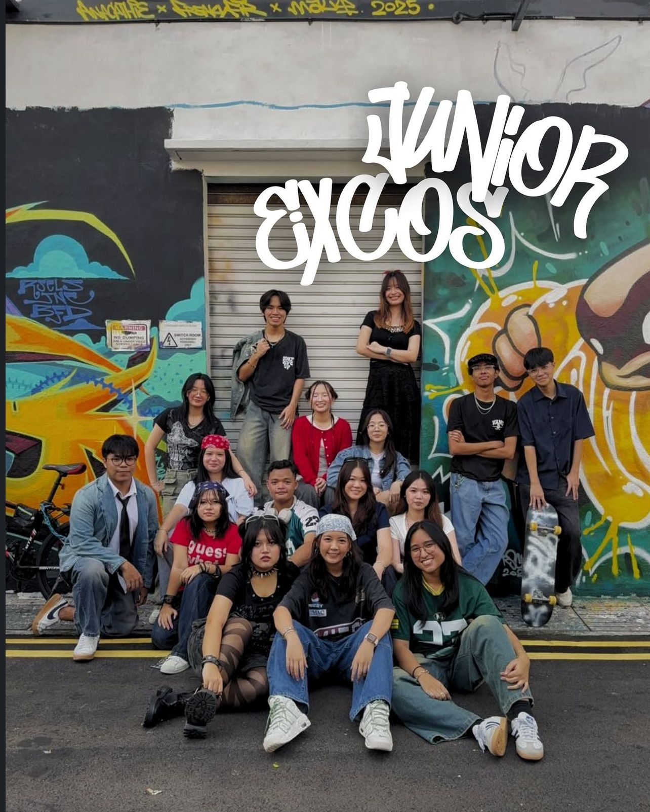
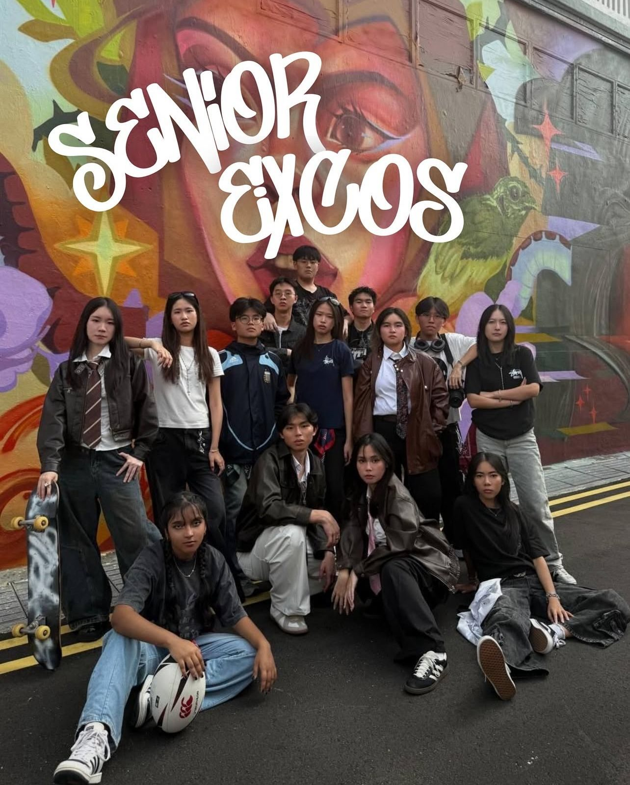

Our Mission
The Nanyang Polytechnic Students' Union (NYPSU) exists to empower, represent, and serve the diverse student community. Our mission is to cultivate leaders, nurture talents, and foster a vibrant campus life for every student.
Shaping Campus Life
Our journey in numbers - showcasing the impact we create for every NYP student.
Our Core Values
Leadership
Fostering leadership skills and encourage students to take initiative and make an impact.
Community
Building a strong, supportive, and inclusive student community where everyone belongs.
Innovation
Encouraging fresh ideas, creativity, and proactive approaches to student life and advocacy.
Union Leaders
Junior Excos

Our Junior Excos supports event planning and brings fresh energy to NYPSU's initiatives. They contribute new ideas and grow as emerging leaders in the student community.
Senior Excos

Our Senior Excos leads with experience and vision, guiding the team, mentoring juniors, and ensuring the success of NYPSU's projects and events.
CORE COMMITTEE
Our Meetings
As an event-based CCA, NYPSU holds official meetings every first week of the month, on Friday from 7:00 PM to 9:00 PM.
Event Participation is first come, first serve. Slots may fill up quickly, so be sure to sign up early for our upcoming events!
Upcoming EventsWhat We Do
Organise Events & Workshops
Exciting events and workshops to enrich student life and create memorable experiences.
Student Advocacy
Advocate for student interests and welfare within the polytechnic community.
Leadership Development
Provide platforms for leadership development and collaborative opportunities.
Support Student Clubs
Support student clubs and initiatives for a thriving campus community.
Community Outreach
Engage with local communities and encourage student participation in social causes.
Networking Events
Facilitate opportunities for students to connect with industry professionals and alumni.
Innovation & Ideas
Encourage creativity and innovation through various student-led initiatives.
Ready to Take Part?
Join NYPSU today and become part of a community shaping the future!
Join Us Today